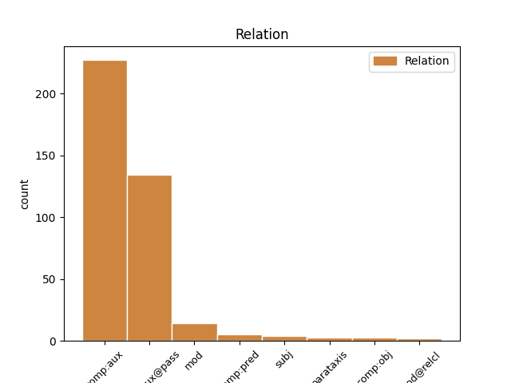
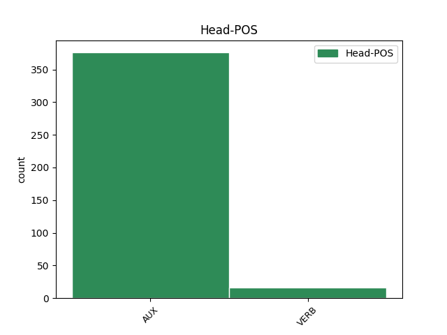
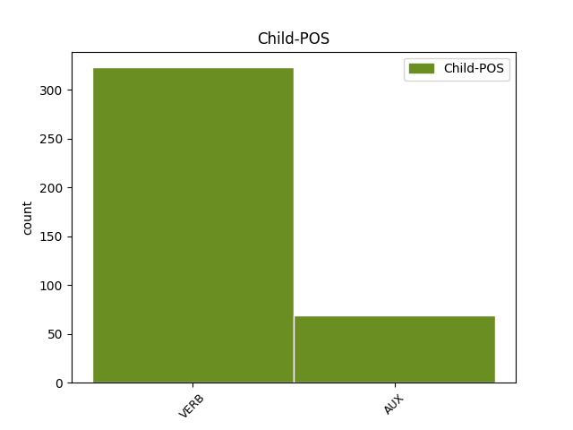

Distribution of features within this leaf



Agreement Rules sorted by frequency.
- When the dependent token is the complement for auxiliary(comp:aux@pass) of the head token, and the head token is AUX and the dependent token is VERB.
1 Même _ _ _ _ 0 _ _ _
2 si _ _ _ _ 0 _ _ _
3 ils _ _ _ _ 0 _ _ _
4 avaient _ _ _ _ 0 _ _ _
5 été être AUX VA Gender=Masc|Number=Sing|Tense=Past|VerbForm=Part 0 _ _ _
6 étiquetés étiqueter VERB V Gender=Masc|Number=Plur|Tense=Past|VerbForm=Part 5 comp:aux@pass _ _
7 viande _ _ _ _ 0 _ _ _
8 de _ _ _ _ 0 _ _ _
9 baleine _ _ _ _ 0 _ _ _
10 , _ _ _ _ 0 _ _ _
11 c' _ _ _ _ 0 _ _ _
12 était _ _ _ _ 0 _ _ _
13 de _ _ _ _ 0 _ _ _
14 la _ _ _ _ 0 _ _ _
15 viande _ _ _ _ 0 _ _ _
16 de _ _ _ _ 0 _ _ _
17 dauphin _ _ _ _ 0 _ _ _
18 . _ _ _ _ 0 _ _ _
1 Rolf _ _ _ _ 0 _ _ _
2 Bolin _ _ _ _ 0 _ _ _
3 , _ _ _ _ 0 _ _ _
4 qui _ _ _ _ 0 _ _ _
5 était _ _ _ _ 0 _ _ _
6 professeur _ _ _ _ 0 _ _ _
7 à _ _ _ _ 0 _ _ _
8 la _ _ _ _ 0 _ _ _
9 station _ _ _ _ 0 _ _ _
10 marine _ _ _ _ 0 _ _ _
11 de _ _ _ _ 0 _ _ _
12 Hopkin _ _ _ _ 0 _ _ _
13 où _ _ _ _ 0 _ _ _
14 je _ _ _ _ 0 _ _ _
15 travaille _ _ _ _ 0 _ _ _
16 , _ _ _ _ 0 _ _ _
17 a avoir AUX VA Mood=Ind|Number=Sing|Person=3|Tense=Pres|VerbForm=Fin 0 _ _ _
18 écrit écrire VERB V Mood=Ind|Number=Sing|Person=3|Tense=Pres|VerbForm=Fin 17 comp:aux _ _
19 dans _ _ _ _ 0 _ _ _
20 les _ _ _ _ 0 _ _ _
21 années _ _ _ _ 0 _ _ _
22 40 _ _ _ _ 0 _ _ _
23 que _ _ _ _ 0 _ _ _
24 , _ _ _ _ 0 _ _ _
25 " _ _ _ _ 0 _ _ _
26 les _ _ _ _ 0 _ _ _
27 gaz _ _ _ _ 0 _ _ _
28 émanant _ _ _ _ 0 _ _ _
29 de _ _ _ _ 0 _ _ _
30 la _ _ _ _ 0 _ _ _
31 crasse _ _ _ _ 0 _ _ _
32 flottante _ _ _ _ 0 _ _ _
33 dans _ _ _ _ 0 _ _ _
34 les _ _ _ _ 0 _ _ _
35 anses _ _ _ _ 0 _ _ _
36 de _ _ _ _ 0 _ _ _
37 le _ _ _ _ 0 _ _ _
38 golfe _ _ _ _ 0 _ _ _
39 étaient _ _ _ _ 0 _ _ _
40 si _ _ _ _ 0 _ _ _
41 mauvais _ _ _ _ 0 _ _ _
42 qu' _ _ _ _ 0 _ _ _
43 ils _ _ _ _ 0 _ _ _
44 faisaient _ _ _ _ 0 _ _ _
45 même _ _ _ _ 0 _ _ _
46 noircir _ _ _ _ 0 _ _ _
47 les _ _ _ _ 0 _ _ _
48 peintures _ _ _ _ 0 _ _ _
49 à _ _ _ _ 0 _ _ _
50 le _ _ _ _ 0 _ _ _
51 plomb _ _ _ _ 0 _ _ _
52 " _ _ _ _ 0 _ _ _
53 . _ _ _ _ 0 _ _ _
1 La _ _ _ _ 0 _ _ _
2 position _ _ _ _ 0 _ _ _
3 commune _ _ _ _ 0 _ _ _
4 inclut _ _ _ _ 0 _ _ _
5 pratiquement _ _ _ _ 0 _ _ _
6 tous _ _ _ _ 0 _ _ _
7 les _ _ _ _ 0 _ _ _
8 amendements _ _ _ _ 0 _ _ _
9 acceptés _ _ _ _ 0 _ _ _
10 par _ _ _ _ 0 _ _ _
11 la _ _ _ _ 0 _ _ _
12 commission _ _ _ _ 0 _ _ _
13 , _ _ _ _ 0 _ _ _
14 harmonise _ _ _ _ 0 _ _ _
15 les _ _ _ _ 0 _ _ _
16 exigences _ _ _ _ 0 _ _ _
17 minimales _ _ _ _ 0 _ _ _
18 applicables _ _ _ _ 0 _ _ _
19 à _ _ _ _ 0 _ _ _
20 les _ _ _ _ 0 _ _ _
21 examens _ _ _ _ 0 _ _ _
22 de _ _ _ _ 0 _ _ _
23 les _ _ _ _ 0 _ _ _
24 conseillers _ _ _ _ 0 _ _ _
25 à _ _ _ _ 0 _ _ _
26 la _ _ _ _ 0 _ _ _
27 sécurité _ _ _ _ 0 _ _ _
28 et _ _ _ _ 0 _ _ _
29 , _ _ _ _ 0 _ _ _
30 en _ _ _ _ 0 _ _ _
31 deuxième _ _ _ _ 0 _ _ _
32 lecture _ _ _ _ 0 _ _ _
33 , _ _ _ _ 0 _ _ _
34 nous _ _ _ _ 0 _ _ _
35 pouvons pouvoir AUX VM Mood=Ind|Number=Plur|Person=1|Tense=Pres|VerbForm=Fin 0 _ _ _
36 accepter _ _ _ _ 0 _ _ _
37 la _ _ _ _ 0 _ _ _
38 date _ _ _ _ 0 _ _ _
39 proposée _ _ _ _ 0 _ _ _
40 , _ _ _ _ 0 _ _ _
41 bien _ _ _ _ 0 _ _ _
42 plus _ _ _ _ 0 _ _ _
43 réaliste _ _ _ _ 0 _ _ _
44 que _ _ _ _ 0 _ _ _
45 celle _ _ _ _ 0 _ _ _
46 projetée _ _ _ _ 0 _ _ _
47 à _ _ _ _ 0 _ _ _
48 le _ _ _ _ 0 _ _ _
49 départ _ _ _ _ 0 _ _ _
50 par _ _ _ _ 0 _ _ _
51 la _ _ _ _ 0 _ _ _
52 commission _ _ _ _ 0 _ _ _
53 , _ _ _ _ 0 _ _ _
54 sachant savoir VERB V Number=Sing|Tense=Pres|VerbForm=Part 35 mod _ _
55 que _ _ _ _ 0 _ _ _
56 cela _ _ _ _ 0 _ _ _
57 fait _ _ _ _ 0 _ _ _
58 déjà _ _ _ _ 0 _ _ _
59 plusieurs _ _ _ _ 0 _ _ _
60 années _ _ _ _ 0 _ _ _
61 que _ _ _ _ 0 _ _ _
62 nous _ _ _ _ 0 _ _ _
63 débattons _ _ _ _ 0 _ _ _
64 cette _ _ _ _ 0 _ _ _
65 question _ _ _ _ 0 _ _ _
66 . _ _ _ _ 0 _ _ _
1 On _ _ _ _ 0 _ _ _
2 connaît connaître VERB V Mood=Ind|Number=Sing|Person=3|Tense=Pres|VerbForm=Fin 0 _ _ _
3 ça _ _ _ _ 0 _ _ _
4 , _ _ _ _ 0 _ _ _
5 n' _ _ _ _ 0 _ _ _
6 est être VERB V Mood=Ind|Number=Sing|Person=3|Tense=Pres|VerbForm=Fin 2 mod _ SpaceAfter=No
7 -ce _ _ _ _ 0 _ _ _
8 pas _ _ _ _ 0 _ _ _
9 ? _ _ _ _ 0 _ _ _
1 Certains _ _ _ _ 0 _ _ _
2 étaient être AUX V Mood=Ind|Number=Plur|Person=3|Tense=Pres|VerbForm=Fin 0 _ _ _
3 de _ _ _ _ 0 _ _ _
4 la _ _ _ _ 0 _ _ _
5 viande _ _ _ _ 0 _ _ _
6 de _ _ _ _ 0 _ _ _
7 baleine _ _ _ _ 0 _ _ _
8 illégale _ _ _ _ 0 _ _ _
9 , _ _ _ _ 0 _ _ _
10 soit être AUX VA Mood=Sub|Number=Sing|Person=3|Tense=Pres|VerbForm=Fin 2 parataxis _ _
11 dit _ _ _ _ 0 _ _ _
12 en _ _ _ _ 0 _ _ _
13 passant _ _ _ _ 0 _ _ _
14 . _ _ _ _ 0 _ _ _
1 L' _ _ _ _ 0 _ _ _
2 article _ _ _ _ 0 _ _ _
3 13 _ _ _ _ 0 _ _ _
4 , _ _ _ _ 0 _ _ _
5 paragraphe _ _ _ _ 0 _ _ _
6 3 _ _ _ _ 0 _ _ _
7 , _ _ _ _ 0 _ _ _
8 de _ _ _ _ 0 _ _ _
9 la _ _ _ _ 0 _ _ _
10 dite _ _ _ _ 0 _ _ _
11 décision _ _ _ _ 0 _ _ _
12 dispose disposer VERB V Mood=Ind|Number=Sing|Person=3|Tense=Pres|VerbForm=Fin 0 _ _ _
13 que _ _ _ _ 0 _ _ _
14 la _ _ _ _ 0 _ _ _
15 commission _ _ _ _ 0 _ _ _
16 présente présenter VERB V Mood=Sub|Number=Sing|Person=3|Tense=Pres|VerbForm=Fin 12 comp:obj _ _
17 à _ _ _ _ 0 _ _ _
18 le _ _ _ _ 0 _ _ _
19 parlement _ _ _ _ 0 _ _ _
20 européen _ _ _ _ 0 _ _ _
21 et _ _ _ _ 0 _ _ _
22 à _ _ _ _ 0 _ _ _
23 le _ _ _ _ 0 _ _ _
24 conseil _ _ _ _ 0 _ _ _
25 , _ _ _ _ 0 _ _ _
26 à _ _ _ _ 0 _ _ _
27 le _ _ _ _ 0 _ _ _
28 plus _ _ _ _ 0 _ _ _
29 tard _ _ _ _ 0 _ _ _
30 le _ _ _ _ 0 _ _ _
31 30 _ _ _ _ 0 _ _ _
32 juin _ _ _ _ 0 _ _ _
33 2005 _ _ _ _ 0 _ _ _
34 : _ _ _ _ 0 _ _ _
1 Je _ _ _ _ 0 _ _ _
2 suis _ _ _ _ 0 _ _ _
3 tout _ _ _ _ 0 _ _ _
4 à _ _ _ _ 0 _ _ _
5 fait _ _ _ _ 0 _ _ _
6 convaincu _ _ _ _ 0 _ _ _
7 que _ _ _ _ 0 _ _ _
8 ce _ _ _ _ 0 _ _ _
9 code _ _ _ _ 0 _ _ _
10 sera _ _ _ _ 0 _ _ _
11 respecté _ _ _ _ 0 _ _ _
12 et _ _ _ _ 0 _ _ _
13 que _ _ _ _ 0 _ _ _
14 le _ _ _ _ 0 _ _ _
15 parlement _ _ _ _ 0 _ _ _
16 sera _ _ _ _ 0 _ _ _
17 tenu tenir VERB V Gender=Masc|Number=Sing|Tense=Past|VerbForm=Part 0 _ _ _
18 informé informer VERB V Gender=Masc|Number=Sing|Tense=Past|VerbForm=Part 17 comp:pred _ _
19 de _ _ _ _ 0 _ _ _
20 toutes _ _ _ _ 0 _ _ _
21 les _ _ _ _ 0 _ _ _
22 évolutions _ _ _ _ 0 _ _ _
23 et _ _ _ _ 0 _ _ _
24 de _ _ _ _ 0 _ _ _
25 les _ _ _ _ 0 _ _ _
26 détails _ _ _ _ 0 _ _ _
27 de _ _ _ _ 0 _ _ _
28 la _ _ _ _ 0 _ _ _
29 mise _ _ _ _ 0 _ _ _
30 en _ _ _ _ 0 _ _ _
31 oeuvre _ _ _ _ 0 _ _ _
32 de _ _ _ _ 0 _ _ _
33 les _ _ _ _ 0 _ _ _
34 programmes _ _ _ _ 0 _ _ _
35 . _ _ _ _ 0 _ _ _
1 Atteignez atteigner VERB V Mood=Imp|Number=Plur|Person=2|Tense=Pres|VerbForm=Fin 0 _ _ _
2 de _ _ _ _ 0 _ _ _
3 800 _ _ _ _ 0 _ _ _
4 millions _ _ _ _ 0 _ _ _
5 de _ _ _ _ 0 _ _ _
6 clients _ _ _ _ 0 _ _ _
7 potentiels _ _ _ _ 0 _ _ _
8 là _ _ _ _ 0 _ _ _
9 où _ _ _ _ 0 _ _ _
10 ils _ _ _ _ 0 _ _ _
11 se _ _ _ _ 0 _ _ _
12 trouvent trouvent VERB V Mood=Ind|Number=Plur|Person=3|Tense=Pres|VerbForm=Fin 1 mod@relcl _ SpaceAfter=No
13 . _ _ _ _ 0 _ _ _
1 - _ _ _ _ 0 _ _ _
2 en _ _ _ _ 0 _ _ _
3 ce _ _ _ _ 0 _ _ _
4 qui _ _ _ _ 0 _ _ _
5 concerne _ _ _ _ 0 _ _ _
6 l' _ _ _ _ 0 _ _ _
7 effet _ _ _ _ 0 _ _ _
8 de _ _ _ _ 0 _ _ _
9 le _ _ _ _ 0 _ _ _
10 programme _ _ _ _ 0 _ _ _
11 relatif _ _ _ _ 0 _ _ _
12 à _ _ _ _ 0 _ _ _
13 la _ _ _ _ 0 _ _ _
14 convergence _ _ _ _ 0 _ _ _
15 de _ _ _ _ 0 _ _ _
16 l' _ _ _ _ 0 _ _ _
17 action _ _ _ _ 0 _ _ _
18 de _ _ _ _ 0 _ _ _
19 formation _ _ _ _ 0 _ _ _
20 de _ _ _ _ 0 _ _ _
21 les _ _ _ _ 0 _ _ _
22 formateurs _ _ _ _ 0 _ _ _
23 à _ _ _ _ 0 _ _ _
24 un _ _ _ _ 0 _ _ _
25 niveau _ _ _ _ 0 _ _ _
26 élevé _ _ _ _ 0 _ _ _
27 , _ _ _ _ 0 _ _ _
28 il _ _ _ _ 0 _ _ _
29 n' _ _ _ _ 0 _ _ _
30 a avoir AUX VA Mood=Ind|Number=Sing|Person=3|Tense=Pres|VerbForm=Fin 0 _ _ _
31 pas _ _ _ _ 0 _ _ _
32 été _ _ _ _ 0 _ _ _
33 possible _ _ _ _ 0 _ _ _
34 de _ _ _ _ 0 _ _ _
35 réaliser _ _ _ _ 0 _ _ _
36 une _ _ _ _ 0 _ _ _
37 évaluation _ _ _ _ 0 _ _ _
38 car _ _ _ _ 0 _ _ _
39 les _ _ _ _ 0 _ _ _
40 informations _ _ _ _ 0 _ _ _
41 n' _ _ _ _ 0 _ _ _
42 étaient être AUX V Mood=Ind|Number=Plur|Person=3|Tense=Pres|VerbForm=Fin 30 mod _ _
43 pas _ _ _ _ 0 _ _ _
44 suffisantes _ _ _ _ 0 _ _ _
45 concernant _ _ _ _ 0 _ _ _
46 le _ _ _ _ 0 _ _ _
47 lien _ _ _ _ 0 _ _ _
48 entre _ _ _ _ 0 _ _ _
49 les _ _ _ _ 0 _ _ _
50 stratégies _ _ _ _ 0 _ _ _
51 nationales _ _ _ _ 0 _ _ _
52 et _ _ _ _ 0 _ _ _
53 les _ _ _ _ 0 _ _ _
54 activités _ _ _ _ 0 _ _ _
55 prévues _ _ _ _ 0 _ _ _
56 dans _ _ _ _ 0 _ _ _
57 le _ _ _ _ 0 _ _ _
58 cadre _ _ _ _ 0 _ _ _
59 de _ _ _ _ 0 _ _ _
60 Pericles _ _ _ _ 0 _ _ _
61 ; _ _ _ _ 0 _ _ _
1 à _ _ _ _ 0 _ _ _
2 le _ _ _ _ 0 _ _ _
3 début _ _ _ _ 0 _ _ _
4 , _ _ _ _ 0 _ _ _
5 les _ _ _ _ 0 _ _ _
6 participants participer VERB V Number=Plur|Tense=Pres|VerbForm=Part 7 subj _ _
7 étaient être AUX V Mood=Ind|Number=Plur|Person=3|Tense=Pres|VerbForm=Fin 0 _ _ _
8 en _ _ _ _ 0 _ _ _
9 grande _ _ _ _ 0 _ _ _
10 majorité _ _ _ _ 0 _ _ _
11 des _ _ _ _ 0 _ _ _
12 agents _ _ _ _ 0 _ _ _
13 de _ _ _ _ 0 _ _ _
14 les _ _ _ _ 0 _ _ _
15 services _ _ _ _ 0 _ _ _
16 répressifs _ _ _ _ 0 _ _ _
17 , _ _ _ _ 0 _ _ _
18 ce _ _ _ _ 0 _ _ _
19 qui _ _ _ _ 0 _ _ _
20 montrait _ _ _ _ 0 _ _ _
21 que _ _ _ _ 0 _ _ _
22 la _ _ _ _ 0 _ _ _
23 priorité _ _ _ _ 0 _ _ _
24 était _ _ _ _ 0 _ _ _
25 d' _ _ _ _ 0 _ _ _
26 établir _ _ _ _ 0 _ _ _
27 des _ _ _ _ 0 _ _ _
28 liens _ _ _ _ 0 _ _ _
29 professionnels _ _ _ _ 0 _ _ _
30 plus _ _ _ _ 0 _ _ _
31 étroits _ _ _ _ 0 _ _ _
32 afin _ _ _ _ 0 _ _ _
33 de _ _ _ _ 0 _ _ _
34 lutter _ _ _ _ 0 _ _ _
35 plus _ _ _ _ 0 _ _ _
36 efficacement _ _ _ _ 0 _ _ _
37 contre _ _ _ _ 0 _ _ _
38 la _ _ _ _ 0 _ _ _
39 contrefaçon _ _ _ _ 0 _ _ _
40 de _ _ _ _ 0 _ _ _
41 l' _ _ _ _ 0 _ _ _
42 euro _ _ _ _ 0 _ _ _
43 . _ _ _ _ 0 _ _ _
Disagree Examples:
1 L' _ _ _ _ 0 _ _ _
2 Oeuvre _ _ _ _ 0 _ _ _
3 est être AUX VA Mood=Ind|Number=Sing|Person=3|Tense=Pres|VerbForm=Fin 0 _ _ _
4 protégée protéger VERB V Gender=Fem|Number=Sing|Tense=Past|VerbForm=Part 3 comp:aux@pass _ _
5 par _ _ _ _ 0 _ _ _
6 le _ _ _ _ 0 _ _ _
7 droit _ _ _ _ 0 _ _ _
8 de _ _ _ _ 0 _ _ _
9 la _ _ _ _ 0 _ _ _
10 propriété _ _ _ _ 0 _ _ _
11 littéraire _ _ _ _ 0 _ _ _
12 et _ _ _ _ 0 _ _ _
13 artistique _ _ _ _ 0 _ _ _
14 ( _ _ _ _ 0 _ _ _
15 droit _ _ _ _ 0 _ _ _
16 d' _ _ _ _ 0 _ _ _
17 auteur _ _ _ _ 0 _ _ _
18 , _ _ _ _ 0 _ _ _
19 droits _ _ _ _ 0 _ _ _
20 voisins _ _ _ _ 0 _ _ _
21 , _ _ _ _ 0 _ _ _
22 droits _ _ _ _ 0 _ _ _
23 de _ _ _ _ 0 _ _ _
24 les _ _ _ _ 0 _ _ _
25 producteurs _ _ _ _ 0 _ _ _
26 de _ _ _ _ 0 _ _ _
27 bases _ _ _ _ 0 _ _ _
28 de _ _ _ _ 0 _ _ _
29 données _ _ _ _ 0 _ _ _
30 ) _ _ _ _ 0 _ _ _
31 ou _ _ _ _ 0 _ _ _
32 toute _ _ _ _ 0 _ _ _
33 autre _ _ _ _ 0 _ _ _
34 loi _ _ _ _ 0 _ _ _
35 applicable _ _ _ _ 0 _ _ _
36 . _ _ _ _ 0 _ _ _
1 À _ _ _ _ 0 _ _ _
2 les _ _ _ _ 0 _ _ _
3 termes _ _ _ _ 0 _ _ _
4 de _ _ _ _ 0 _ _ _
5 la _ _ _ _ 0 _ _ _
6 présente _ _ _ _ 0 _ _ _
7 autorisation _ _ _ _ 0 _ _ _
8 , _ _ _ _ 0 _ _ _
9 une _ _ _ _ 0 _ _ _
10 oeuvre _ _ _ _ 0 _ _ _
11 qui _ _ _ _ 0 _ _ _
12 constitue _ _ _ _ 0 _ _ _
13 une _ _ _ _ 0 _ _ _
14 Oeuvre _ _ _ _ 0 _ _ _
15 dite _ _ _ _ 0 _ _ _
16 collective _ _ _ _ 0 _ _ _
17 ne _ _ _ _ 0 _ _ _
18 sera être AUX VA Mood=Ind|Number=Sing|Person=3|Tense=Fut|VerbForm=Fin 0 _ _ _
19 pas _ _ _ _ 0 _ _ _
20 considérée considérer VERB V Gender=Fem|Number=Sing|Tense=Past|VerbForm=Part 18 comp:aux@pass _ _
21 comme _ _ _ _ 0 _ _ _
22 une _ _ _ _ 0 _ _ _
23 oeuvre _ _ _ _ 0 _ _ _
24 dite _ _ _ _ 0 _ _ _
25 derivée _ _ _ _ 0 _ _ _
26 ( _ _ _ _ 0 _ _ _
27 telle _ _ _ _ 0 _ _ _
28 que _ _ _ _ 0 _ _ _
29 définie _ _ _ _ 0 _ _ _
30 ci-après _ _ _ _ 0 _ _ _
31 ) _ _ _ _ 0 _ _ _
32 . _ _ _ _ 0 _ _ _
1 L' _ _ _ _ 0 _ _ _
2 exercice _ _ _ _ 0 _ _ _
3 de _ _ _ _ 0 _ _ _
4 tous _ _ _ _ 0 _ _ _
5 les _ _ _ _ 0 _ _ _
6 droits _ _ _ _ 0 _ _ _
7 qui _ _ _ _ 0 _ _ _
8 ne _ _ _ _ 0 _ _ _
9 sont être AUX VA Mood=Ind|Number=Plur|Person=3|Tense=Pres|VerbForm=Fin 0 _ _ _
10 pas _ _ _ _ 0 _ _ _
11 expressément _ _ _ _ 0 _ _ _
12 autorisés autoriser VERB V Gender=Masc|Number=Plur|Tense=Past|VerbForm=Part 9 comp:aux@pass _ _
13 par _ _ _ _ 0 _ _ _
14 l' _ _ _ _ 0 _ _ _
15 offrant _ _ _ _ 0 _ _ _
16 ou _ _ _ _ 0 _ _ _
17 dont _ _ _ _ 0 _ _ _
18 il _ _ _ _ 0 _ _ _
19 n' _ _ _ _ 0 _ _ _
20 aurait _ _ _ _ 0 _ _ _
21 pas _ _ _ _ 0 _ _ _
22 la _ _ _ _ 0 _ _ _
23 gestion _ _ _ _ 0 _ _ _
24 demeure _ _ _ _ 0 _ _ _
25 réservé _ _ _ _ 0 _ _ _
26 , _ _ _ _ 0 _ _ _
27 notamment _ _ _ _ 0 _ _ _
28 les _ _ _ _ 0 _ _ _
29 mécanismes _ _ _ _ 0 _ _ _
30 de _ _ _ _ 0 _ _ _
31 gestion _ _ _ _ 0 _ _ _
32 collective _ _ _ _ 0 _ _ _
33 obligatoire _ _ _ _ 0 _ _ _
34 applicables _ _ _ _ 0 _ _ _
35 décrits _ _ _ _ 0 _ _ _
36 à _ _ _ _ 0 _ _ _
37 l' _ _ _ _ 0 _ _ _
38 article _ _ _ _ 0 _ _ _
39 4d _ _ _ _ 0 _ _ _
40 . _ _ _ _ 0 _ _ _
1 L' _ _ _ _ 0 _ _ _
2 autorisation _ _ _ _ 0 _ _ _
3 accordée _ _ _ _ 0 _ _ _
4 par _ _ _ _ 0 _ _ _
5 l' _ _ _ _ 0 _ _ _
6 article _ _ _ _ 0 _ _ _
7 3 _ _ _ _ 0 _ _ _
8 est être AUX VA Mood=Ind|Number=Sing|Person=3|Tense=Pres|VerbForm=Fin 0 _ _ _
9 expressément _ _ _ _ 0 _ _ _
10 assujettie assujettir VERB V Gender=Fem|Number=Sing|Tense=Past|VerbForm=Part 8 comp:aux@pass _ _
11 et _ _ _ _ 0 _ _ _
12 limitée _ _ _ _ 0 _ _ _
13 par _ _ _ _ 0 _ _ _
14 le _ _ _ _ 0 _ _ _
15 respect _ _ _ _ 0 _ _ _
16 de _ _ _ _ 0 _ _ _
17 les _ _ _ _ 0 _ _ _
18 restrictions _ _ _ _ 0 _ _ _
19 suivantes _ _ _ _ 0 _ _ _
20 : _ _ _ _ 0 _ _ _
1 l' _ _ _ _ 0 _ _ _
2 Acceptant _ _ _ _ 0 _ _ _
3 ne _ _ _ _ 0 _ _ _
4 peut _ _ _ _ 0 _ _ _
5 pas _ _ _ _ 0 _ _ _
6 offrir _ _ _ _ 0 _ _ _
7 ou _ _ _ _ 0 _ _ _
8 imposer _ _ _ _ 0 _ _ _
9 de _ _ _ _ 0 _ _ _
10 conditions _ _ _ _ 0 _ _ _
11 d' _ _ _ _ 0 _ _ _
12 utilisation _ _ _ _ 0 _ _ _
13 de _ _ _ _ 0 _ _ _
14 l' _ _ _ _ 0 _ _ _
15 oeuvre _ _ _ _ 0 _ _ _
16 qui _ _ _ _ 0 _ _ _
17 altèrent _ _ _ _ 0 _ _ _
18 ou _ _ _ _ 0 _ _ _
19 restreignent _ _ _ _ 0 _ _ _
20 les _ _ _ _ 0 _ _ _
21 termes _ _ _ _ 0 _ _ _
22 de _ _ _ _ 0 _ _ _
23 le _ _ _ _ 0 _ _ _
24 présent _ _ _ _ 0 _ _ _
25 contrat _ _ _ _ 0 _ _ _
26 ou _ _ _ _ 0 _ _ _
27 l' _ _ _ _ 0 _ _ _
28 exercice _ _ _ _ 0 _ _ _
29 de _ _ _ _ 0 _ _ _
30 les _ _ _ _ 0 _ _ _
31 droits _ _ _ _ 0 _ _ _
32 qui _ _ _ _ 0 _ _ _
33 y _ _ _ _ 0 _ _ _
34 sont être AUX VA Mood=Ind|Number=Plur|Person=3|Tense=Pres|VerbForm=Fin 0 _ _ _
35 accordés accorder VERB V Gender=Masc|Number=Plur|Tense=Past|VerbForm=Part 34 comp:aux@pass _ _
36 à _ _ _ _ 0 _ _ _
37 le _ _ _ _ 0 _ _ _
38 bénéficiaire _ _ _ _ 0 _ _ _
39 . _ _ _ _ 0 _ _ _